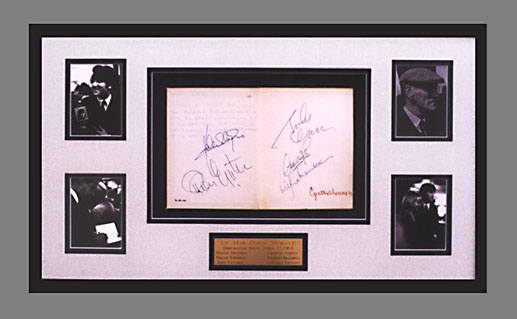
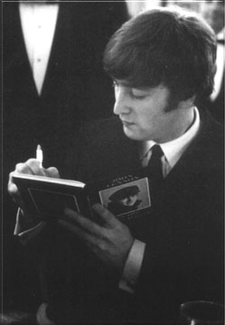

 |
| Thanks to Becky at Coffey's Frame Shop in Tacoma for a wonderful job! |
John had always been a bit of an artist and a poet. He used to scribble away in a notebook at school and continued to do so whenever he had the chance in dressing-rooms or on the road.

In early 1964 he published a collection of his drawings and verse under the title John Lennon: In His Own Write It was the first public sign that he wanted to do things away from the group, that just being a Beatle was not enough.The bookshop Foyle's honoured the publication with a literary luncheon, held on 23 April at the Dorchester Hotel. The chairman was Osbert Lancaster, and guests included such showbiz luminaries as Arthur Askey, Harry Secombe, Millicent martin and Joan Littlewood. Fellow pop starts Helen Sharpiro, Victor Silvester, Mary Quant and the cartoonist Giles. Members of the public could attend on payment of twenty-one shillings. Strangely, none of the other Beatles was present, though Brian Epstein, of course, was.
Osbert Lancaster's speech included this tribute to the Beatles: 'In the Royal Variety Show they shone out like a good deed in a naughty world. The have established something pretty rare, something which has the same measure of success as the old English music hall - an accord between the starge and the audience. They represent, however different their methods may be, the genuine strength in English entertainment far more successfully than rows of ladies and gentlement tramping about with bustles and false whiskers.'
John, in reply, said merely, 'Thank you very much, and God bless you.`